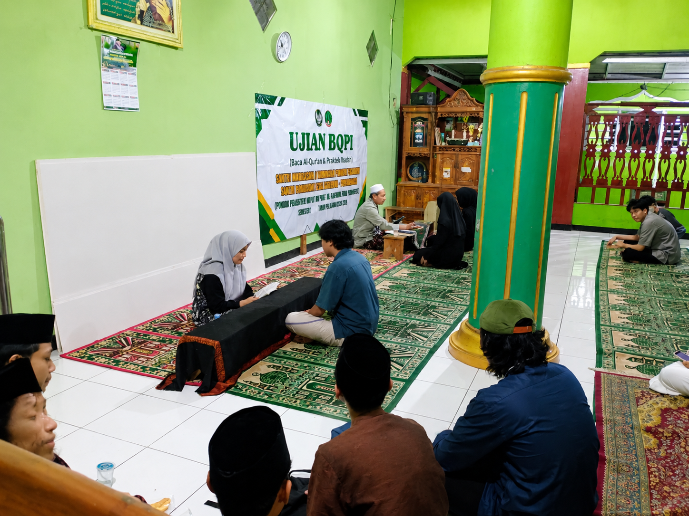

Tentang Pondok Pesantren Sunan Gringsing
Pondok Pesantren Sunan Gringsing merupakan salah satu pondok pesantren yang ada di Kabupaten Purbalingga. Adapun belajar mengajar di ponpes ini menggunakan kurikulum yang berlaku di tambah dengan ilmu agama. Ada juga kegiatan-kegiatan ekstrakurikuler sekolah untuk santri seperti karate, basket, futsal, grup belajar dan lainnya.
Pondok Pesantren Sunan Gringsing memiliki staf pengajar ustadz/ustadzah serta guru yang kompeten pada bidang pelajarannya masing-masing sehingga berkualitas dan menjadi salah satu pesantren terbaik di Kabupaten Purbalingga. Tersedia juga berbagai fasilitas seperti ruang kelas yang nyaman, asrama yang nyaman, laboratorium praktikum, perpustakaan, lapangan olahraga, kantin, masjid dan lainnya.
Sejak berdiri, pesantren terus berkembang dan berusaha meningkatkan kualitas pendidikannya. Kami menggabungkan sistem pengajian tradisional dengan metode pembelajaran modern agar santri tidak hanya menguasai ilmu agama, tetapi juga memiliki bekal untuk melanjutkan pendidikan ke jenjang yang lebih tinggi dan berkarya di masyarakat.


Pondok Pesantren Sunan Gringsing